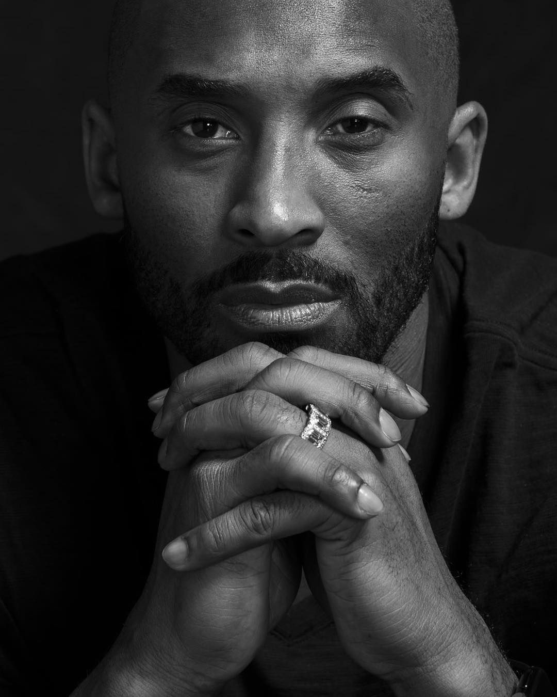
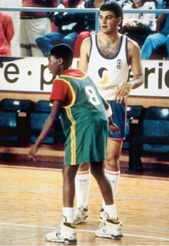
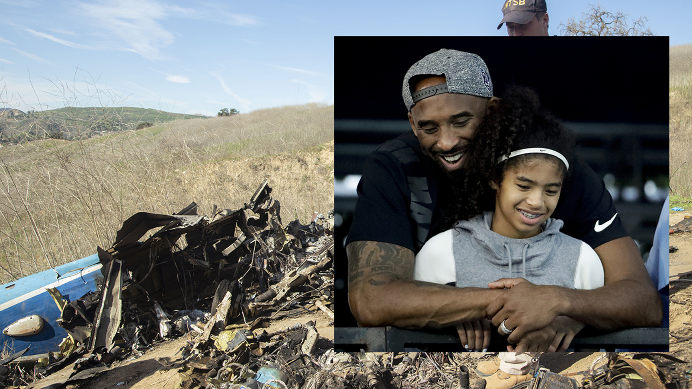

Who was Kobe?
Unless you've been under a rock for the past couple decades you probably know
who Kobe was. However, if somehow you don't know who he was then here is brief
explanation of one of the NBA's greatest players.
Kobe Bryant, a former professional basketball player; a 6' 6" shooting gaurd
who came from Lower Merion High School and went straight into the NBA at the
age of 17. Depite being draft pick 13 for the Charlotte Hornets in the 1996 NBA Draft, he was quickly traded
to the Los Angeles Lakers, where he would spend the entirity of his 20 season
long NBA career. There he would win 5 NBA championship titles, 07-08 season MVP, 2
finals MVPs, and 4 All-Star MVPs. Being an 18x All-Star player Kobe is to be inducted into
the NBA hall of fame this year. Unfortunately January 26, 2020 he would
passed away due to a helicopter crash with his daughter in California on his way to Mamba Academy
a training facility he co-founded in 2018.

Kobe When He Was Young
Kobe Bryant was born on August 23, 1978. He was named "Kobe" after
a city in Japan. Kobe is also the son of the former NBA play Joe Bryant.
When Kobe was young Kobe and his family moved to Italy.
After his father retired from the NBA moved and went to play
in the Italian League. Growing up in Italy, he grew up learning
Italian, and often played basketball with grown ups.
When Kobe was around the age of 13, Kobe and his family moved back from Italy
to the United States. There he would attent Lower Merion High School and
lead the basketball team to win 4 state championships in a row. Facing great
success in his high school career, he would begin working out with NBA teams
and would soon after announce that he would not attend college and would enter
himself into the 1996 Draft.
If you'd like to know more about his career you can view more in the
NBA Career Page.
His Unfortunate Death
On January 26, 2020, Kobe Bryant was on a helicopter crash at along with eight other people
including his 13 year old daughter Gianna. Kobe and Gianna were on their way to Mamba
sport Academy where he was scheduled to coach a basketball tournament game.
